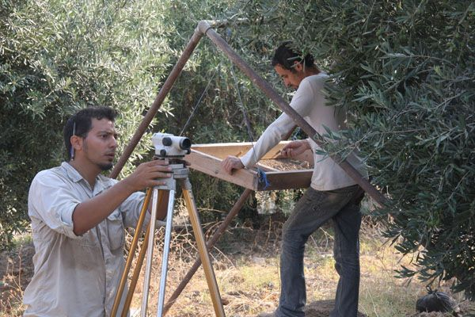

Welcome!
I have created this site as both a way of disseminating information and data from my own research on the Neolithic period in Southwest Asia and the character and environmental consequences of ancient and modern agropastoralism. I also hope that this website will serve as a resource for students interested in Near Eastern Archaeology in general, and especially Levantine Neolithic archaeology in particular.
I am a post-doctoral researcher at Arizona State University, studying the long term effects of human landuse decisions, especially those associated with Neolithic farming and pastoralism. As a fun way for you to quickly get a grasp of the types of things I research, I created this wordcloud from my publications (made at wordle):
About Me:
My main areas of interest are GIS applications in Archaeology, Quantitative Methods, Landscape Archaeology, Geoarchaeology, Geomorphology, Household Archaeology, Spatial Analysis, Archaeological Modeling, Computational Modeling, Archaeological Survey, and Microrefuse Analysis.
About this site:
I will do my best to ensure that this site will be continuously
updated, and
content
and pages will be added as regularly as possible, so
check back often. Please be sure to email
me if
you have any suggestions or requests, or if you want me to
link to your page or host some of your data. If you would like
to
be
notified about new research that I publish, be sure to
follow me on Academia.edu.
To
find
out
who
is citing my research, visit my Google
Scholar Citations Index page.
 |
| Working at the Late Neolithic site of Al Basitan, Wadi Ziqlab, Jordan. |
Quick Download Area:
Research Projects
Doctoral research:
--Read my doctoral dissertation
Ongoing research:
--View the Ancient Pastoralism Project Page.
--View the Microrefuse Project page.
--View the Wadi Ziqlab GIS page.
--Go to the Mediterranean Landscape Dynamics Project Website.
MA
Thesis:
Published Papers
Looking
for the Future in the Past: Long-Term Change in Socioecological
Systems. (2012) (External
Link)
A GIS Method for Assessing the Zone of
Human-Environmental Impact
Around Archaeological Sites: a Test Case From the Late Neolithic
of
Wadi Ziqlâb, Jordan. (2011)(External
Link)
Computational modeling and Neolithic
Soicioecological Dynamics: A
Case Study from Soutwest Asia. (2010) (External
Link)
Land use, water and Mediterranean
landscapes: modelling long-term
dynamics of complex socio-ecological systems. (2010)
(External
Link)
Within room analysis of activity areas
at Late Neolithic Tabaqat
Al-Buma, Wadi Ziqlab, Al Kura, Jordan (2009) (External
Link)
Living in the Past and Looking
Toward the Future. (A review of
MedLanD project Research published in 2010) (External
Link)
Conference Papers
Simulating “Collapse”
A computational modeling approach to understanding adaptive
reorganization in low-level socio-natural systems (2013)
PDF (5.5 Mb)
A GIS method for assessing the
zone of human-environmental impact around archaeological sites.
(2010) PDF (2.8 Mb)
Conference Posters
Simpler is better: lessons
from
modeling coupled human and natural systems in the Mediterranean
Landscape Dynamics Project (2011) PDF
(7.0 Mb)
Microrefuse Sampling Techniques. (2010) PDF (1.1 Mb)
Coupled ABM-GIS Modeling of Agropastoral Systems in Eastern Spain. (2010) PDF (0.7 Mb)
Ancient pastoralism and landscape change in south central Jordan: Are older survey data reliable for human-environment interaction studies? (2009) PDF (5.2 Mb)
A Coupled ABM-GIS model of small-scale farming (2009) PDF (0.6 Mb)
Unpublished Papers
When Hunting Meets Herding: Multivariate Analysis of Cross-Cultural Datasets. PDF (2.4 Mb)
Microrefuse Analysis: Theory and Methodology With Respect to Spatial Analysis and Household Archaeology. PDF (0.1 Mb)
Summary of the Pastoral Landscape. PDF (0.1 Mb)
{kind=link}